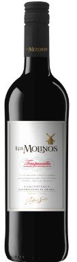

Los Molinos Tempranillo
Los Molinos has a berry like taste mostly from cranberry like hints. It's very cheap option (7.19€). We gave the Molinos a rating of 3.7/5 becuase it's not that very good. But the price makes it a lot more potential wine to buy.

Don Opas
We were really suprised from Don Opas the taste is good and has hints of cherry it's a bit sour but that didn't bother me and kinda liked it! The price is 7.39€ so a bit more thatn the Molinos but still better in my opinion. We gave it a rating of 4.2/5!